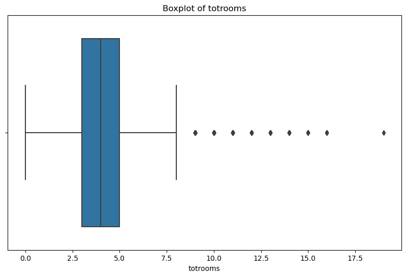
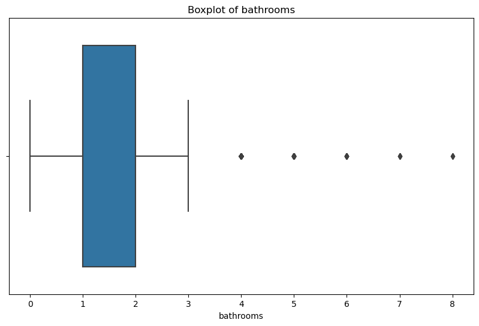
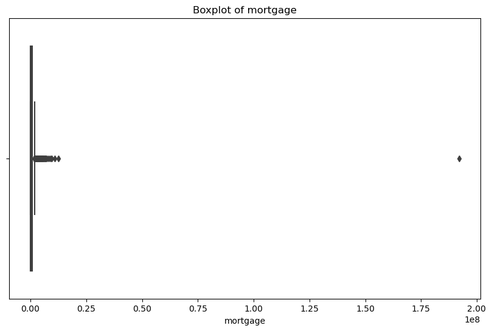
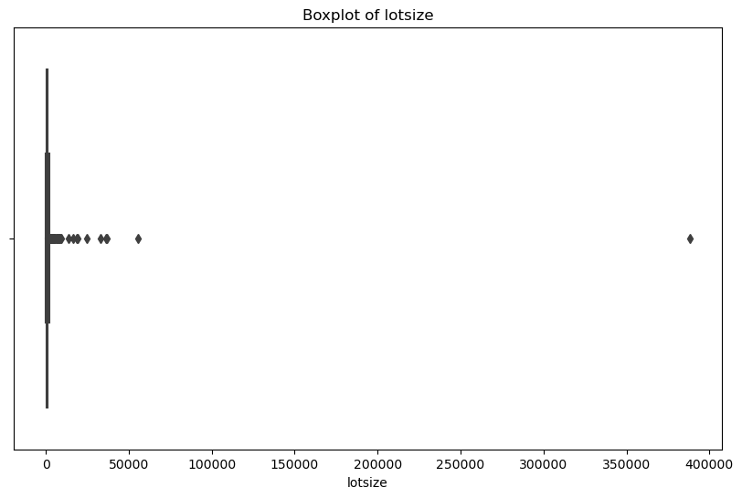

Subtheme: Speculation
Overall Analysis Questions
- Over the last 24 years in Boston, what are the trends in the characteristics of property sales for investor buyers and non-investor buyers?
- How do different groups of investors and non-investors engage in property flipping in Boston and how do they benefit?
- What patterns do we see among buyer-seller pairs for properties in Boston?
Exploring the Dataset
This dataset, spanning the last 24 years, comprises approximately 49,000 entries detailing housing sale transactions across Boston. It is rich with data on each transaction, including investor participation and pricing details. To commence our exploratory journey, we conducted a thorough examination of the variables across all columns for an initial 'gut-check' to ascertain their logical consistency. My investigation promptly uncovered several illogical entries necessitating exclusion. Consequently, I refined the dataset to consider property prices within a rational range, specifically, homes priced between $100,000 and $3,650,000. This upper limit was deliberately chosen to omit the ultra-affluent sector - albeit, $3.65 million stretches the bounds of what I might consider 'affordable.'. This culling strategy effectively excludes the top 5% of data points. Further, entries lacking latitude/longitude coordinates were omitted to facilitate geographical visualization, setting the stage for a deeper, visually-driven analysis.
Outliers and Anomalies
An initial sweep of the dataset unearthed several outliers within crucial variables such as 'bathrooms', 'mortgage', 'lotsize', and 'totrooms'. These outliers threaten to distort the analysis, not truly reflecting the dataset's essence.
Boxplot Analysis
Boxplots served as our tool to dissect and comprehend the anomalies within these variables. They illuminated data points straying far from the norm, earmarking them for further scrutiny.
 Entries featuring 'bathrooms' and 'totrooms' beyond conventional residential ranges were excised, likely stemming from data entry missteps or non-representative properties. The threshold was set at more than 8 total rooms or 4 bathrooms.
Exorbitant 'mortgage' values, hinting at possible data inaccuracies, were trimmed to mirror figures typical of residential financing, as depicted above.
Similarly, 'lotsize' outliers, suggesting significant measurement errors, were adjusted to spotlight standard residential lot dimensions, with the above image showcasing the excised outliers.
The meticulous cleaning of these variables resulted in a refined dataset (reduced to 42,698 items), poised for more precise analysis. This enhancement not only elevated the dataset's integrity but also laid a solid foundation for generating insights rooted in dependable and pertinent data.The heatmap vividly delineates the geographical distribution of property sales across Boston, affirming the anticipated dispersion throughout the region. A captivating revelation emerges from the central districts spanning from Back Bay to Beacon Hill, and extending to the South End, North End, and the Financial District, where a significant concentration of transactions is observed. Notably, these areas also command higher property prices compared to peripheral neighborhoods like Dorchester or Mattapan. This pattern may hint at potential data collection biases or suggest a heightened frequency of transactions and property flipping within Boston's core, setting a robust foundation for further inquiry into the initially proposed questions.
Discoveries & Insights
Question: Over the last 24 years in Boston, what are the trends in the characteristics of property sales for investor buyers and non-investor buyers?
The plot above eloquently reveals the transactional dynamics of investors and non-investors spanning a quarter-century, delineating the frequency with which these two distinct groups engage in property sales. Each data point signifies the monthly transaction rate. A trend that surfaces from this data is the diminishing rate of transactions initiated by non-investors over the past two decades, a decline that is juxtaposed against a marginal uptick in investor transaction frequency. While the uptick for investors is somewhat tepid and hardly noteworthy in statistical terms, the overarching narrative the plot conveys is one of non-investors' transaction frequency towering over that of investors by a substantial margin. This disparity underscores a marketplace where non-investors are predominant buyers. Nevertheless, this plot's scope is limited to transaction frequency and abstains from delving into the property pricing spectrum or the prevalence of cash transactions. To cultivate a richer understanding of market trends, a subsequent analysis of the proportion of cash purchases is imperative.
Segueing to the next visualization, it reveals the narrative of cash transactions within the investor and non-investor dichotomy. It is in this arena that investors emerge more prominently. Scrutinizing the last two dozen years reveals that investors predominantly dominate all-cash sales a trend that persists despite their relatively minuscule slice of the transactional pie as shown earlier. This dominance is indicative of investors wielding more substantial financial clout to facilitate property acquisitions as opposed to their non-investor counterparts. A twist in the tale, however, is the escalating trend of cash payments by non-investors, which has burgeoned from 18% to over 30% in the last 24 years. To forge a full picture that encapsulates both the financial and property predilections of both groups, one must analyze the property prices they have engaged with.
Turning our attention to the subsequent visualization, we are greeted by a series of box and whisker plots that juxtapose the purchase prices over a temporal axis, bifurcated along investor and non-investor lines. Amidst the revelations is the lack of pronounced disparity at the upper echelons of purchase amounts between the two factions. Yet, when one peruses the average spending, it becomes apparent that investors are consistently outlaying more capital on properties than non-investors - a discernment that paints a picture of investment patterns but stops short of shedding light on the types of properties each group is channeling their funds into.
The next visualization invites us to examine the array of property styles, their corresponding prices, and the sales frequency, all through the lens of investor status. At first glance, the diversity of homes that both investors and non-investors are drawn to appears strikingly similar - a similarity that extends to the distribution of property styles. However, the right-hand side frequency plot provides less insight into property preferences and more into the overall distribution and occurrence of these styles within the Bostonian landscape. The left-hand side of the plot offers a glimpse into the monetary value these groups are prepared to invest, with a noticeable trend across different housing styles. A quick observation reveals that the price range for investors is more dispersed, hinting at speculative investment practices within the market.
Question: How do different groups of investors and non-investors engage in property flipping in Boston and how do they benefit?
To delve deeply into the heart of speculation, we pivot our attention to the segment of the dataset that elucidates property flips. Here, 'flips' are characterized as any property that witnesses consecutive sales within a biennial timeframe. The visualization elucidates the typical duration of flips across different investor categories. It becomes evident that non-investors are less prone to flipping than investors, with institutional investors, in particular, exhibiting a propensity to offload properties posthaste. This brisk turnover rate, especially at the 25th percentile, intimates a more aggressive risk-taking and profit-seeking stance by institutional investors compared to their small-scale counterparts. Moreover, the visualization delineates the proportion of flips within each category, with institutional investors engaging in flipping up to 40% of their sales - a stark contrast to the 7% observed among non-investor sales. While this plot lays bare the strategic reliance on flipping by institutional investors, it remains silent on the profitability that ensues from such ventures.
The subsequent plot endeavors to decipher the profit margins across the spectrum of investor groups. On the left, we observe a general uniformity in profit margins for returns above the break-even point, suggesting a commonality in profit-making across all groups. Interestingly, large and small investors seem to reap the lion's share of profits, challenging the assumed correlation between the duration of flipping and financial gain. The plot also casts light on the propensity of institutional investors to incur substantial losses, as evidenced by the segment of losses ranging from -50% to -100%. This variance in profit and loss profiles is further explored in the right-hand Swarm plot, which showcases the average dollar value profits, affirming that while all groups tend to make a profit, medium investors are particularly adept at sidestepping losses. This is corroborated by the observation that large and small. The plot vividly displays the frequency of transactions by investors and non-investors over the last 24 years, with a noticeable downtrend in non-investor activity contrasted by a slight rise in investor transactions, though not significantly. It highlights a predominantly non-investor driven market, implying a focus on non-investor buying patterns, though without insights into property prices or cash transactions.
The heatmap presented above revisits the earlier analysis, now enhanced with markers pinpointing locations where investors predominantly engage in property flipping. A particularly intriguing observation is that investors tend to focus their flipping activities within Central Boston - areas like Back Bay, Beacon Hill, and the Financial District - eschewing the outer neighborhoods such as Jamaica Plain or South Boston. This pattern suggests investors believe that the most lucrative profits are to be found in the high-price zones of Central Boston. However, this visualization stops short of revealing the overall sale prices of the properties targeted for flipping.
The subsequent plot delves into the average sale prices of flipped properties over time, categorized by the size of the investor groups. It reveals that small, medium, and large investors typically purchase and subsequently sell properties at a higher value compared to institutional investors, who seem to target properties in the lower price range. This trend raises concerns about the impact of institutional investors on the affordability of housing, suggesting they may contribute more to housing unaffordability than other investor types due to their focus on lower-priced regions, where the general populace is more likely to buy homes.
Question: What patterns do we see among buyer-seller pairs for properties in Boston?
An analysis of the dynamic between buyers and sellers in this dataset uncovers how properties are circulated between investors and non-investors. Notably, the data shows that transaction prices between various combinations of investors and non-investors have increased over time, with a standout finding that investors frequently transact at higher prices among themselves. This behavior indicates a propensity for investors to exacerbate speculation by circulating properties within their networks at inflated prices, whereas transactions involving non-investors tend to be at lower prices, suggesting that high-value properties are more accessible to those who can afford cash purchases. This insight prompts a deeper investigation into the relationships formed between investors during these transactions.
To understand the nuances of these buyer-seller interactions, we examine a bipartite graph representing the various types of investors and the nature of their organizations, rather than their scale. The thickness of the lines in the graph visually represents the transaction volume between different buyer-seller pairs, revealing that LLCs and trusts dominate these exchanges, engaging in transactions at a comparable rate. In contrast, other business entities, such as banks, show lesser involvement in speculative investments. This finding underscores the need for public policy interventions aimed at curbing speculative practices, suggesting that a focus on the behaviors and practices of LLCs and trusts could be pivotal in mitigating speculation in the housing market.
Summary
The analysis reveals a shifting real estate landscape over 24 years, marked by a decline in non-investor transactions and a modest uptick in investor activity. Notably, investors dominate the all-cash purchase sector, underscoring their substantial capital influence. The trend of non-investors using cash has notably increased, which invites a deeper examination into the associated property prices and purchasing preferences. Institutional investors stand out for their aggressive flipping strategies, indicating a focus on rapid turnover for profit. Although flipping is prevalent across investor types, institutional investors exhibit both higher profits and substantial losses, reflecting a high-risk, high-reward approach. This behavior, particularly concentrated in central Boston, suggests speculation is most intense in areas with higher property values, potentially influencing affordable housing markets and inviting policy consideration towards LLCs and trusts.